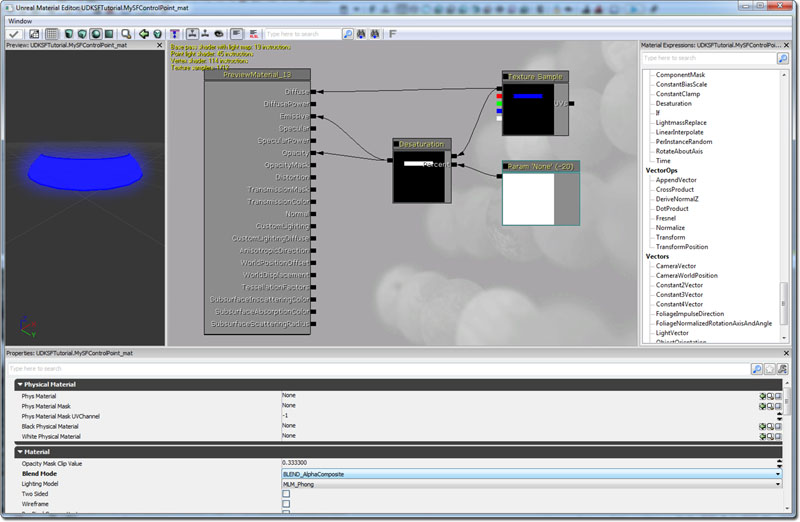

UDN
Search public documentation:
GFxVolumeStatusBar
日本語訳
中国翻译
한국어
Interested in the Unreal Engine?
Visit the Unreal Technology site.
Looking for jobs and company info?
Check out the Epic games site.
Questions about support via UDN?
Contact the UDN Staff
中国翻译
한국어
Interested in the Unreal Engine?
Visit the Unreal Technology site.
Looking for jobs and company info?
Check out the Epic games site.
Questions about support via UDN?
Contact the UDN Staff
How to add a control volume with a status bar
Overview
This tutorial will cover how to add a very basic control volume with working Status Bar. There are three versions to this tutorial. Version 1 must be completed before you can add the optional code of either version 2 or version 3.
- The status bar will be drawn to the screen, centered on the HUD.
- The status bar is displayed as a hovering bar at the center of the control volume. It is physically in the game world, and always faces the player.
- The bar is again drawn on the HUD, this time at the relative position of the control volume, using Canvas.Project. The status bar moves around the HUD as the player moves, always positioned relative to the location of the control volume.
Flash Setup
- Create a new AS 2 document.
- Set the Document dimensions to 512x256
-
 IMPORTANT: Set the Document background to black.
IMPORTANT: Set the Document background to black.
- Create a blue rectangle in the center of the document.
- Convert it to a Movie Clip.
- Give it an instance name of BlueStatusBar.
- Save and Publish the SWF to your UDK install under /UDKGame/Flash/UDKSFTutorial/CVStatusBar.SWF.
- Import the SWF into UDK.
Status Bar Centered on HUD
Create the actual placeable control volume that you can place anywhere in your map.
class SFControlVolume extends Volume
placeable;
var bool bControlled;
var int ElapsedTime;
var int PercentCaptured;
// Editable Properties
var(TimeToControl) int TimeToControl;
var(TimeToControl) float UpdateRate;
var() SwfMovie Movie;
var Info ControlTimer;
var SFControlVolumeMovie CVMovie;
event PostBeginPlay()
{
Super.PostBeginPlay();
ControlTimer = Spawn(class'SFVolumeControlTimer', self);
}
event Touch(Actor Other, PrimitiveComponent OtherComp, vector HitLocation, vector HitNormal)
{
Super.Touch(Other,OtherComp,HitLocation,HitNormal);
if(!bControlled)
{
// Turn on the timer, and have it tick every X seconds, where X = UpdateRate.
ControlTimer.SetTimer(UpdateRate,true);
}
// Only display the status bar when the player has touched/is in the volume.
CreateControlVolumeMovie();
UpdateStatusBar();
}
event UnTouch(Actor Other)
{
Super.UnTouch(Other);
// Reset capture timer.
ControlTimer.ClearTimer();
// Close the status bar when the player leaves the volume.
CVMovie.Close(true);
CVMovie = none;
if(!bControlled)
{
ElapsedTime = 0;
}
}
function StartControlling(SFVolumeControlTimer VC)
{
local int PercentCaptured;
if (VC == ControlTimer)
{
ElapsedTime++;
`log("Time to capture: " @ TimeToControl - ElapsedTime);
UpdateStatusBar();
// Once we reach the total time to control, capture the volume and clear the timer.
if(ElapsedTime >= TimeToControl)
{
`log("Captured!");
bControlled = true;
ControlTimer.ClearTimer();
}
}
}
function UpdateStatusBar()
{
PercentCaptured = (100 * float(ElapsedTime)) / float(TimeToControl);
CVMovie.UpdateStatusBar(self, PercentCaptured);
}
function CreateControlVolumeMovie()
{
CVMovie = new class'SFControlVolumeMovie';
CVMovie.MovieInfo = Movie;
CVMovie.SetTimingMode(TM_Real);
CVMovie.Start();
}
defaultproperties
{
TimeToControl=100
UpdateRate=0.1
}
class SFVolumeControlTimer extends Info;
var SFControlVolume CV;
event PostBeginPlay()
{
Super.PostBeginPlay();
CV = SFControlVolume(Owner);
}
event Timer()
{
CV.StartControlling(self);
}
defaultproperties
{
TickGroup=TG_PreAsyncWork
bStatic=false
RemoteRole=ROLE_None
}
class SFControlVolumeMovie extends GFxMoviePlayer;
var GFxObject StatusBarMC;
function bool Start(optional bool StartPaused = false)
{
Super.Start();
Advance(0);
StatusBarMC = GetVariableObject("_root.BlueStatusBar");
return true;
}
function UpdateStatusBar(SFControlVolume CV, int PercentCaptured)
{
local GFxObject.ASDisplayInfo DI;
DI.hasXScale = true;
DI.hasAlpha = true;
DI.XScale = PercentCaptured;
DI.Alpha = 100;
if (DI.XScale >= 100)
{
DI.XScale = 101;
}
else if (DI.XScale == 0)
{
DI.XScale = 1;
DI.Alpha = 0;
}
StatusBarMC.SetDisplayInfo(DI);
}
defaultproperties
{
bDisplayWithHudOff = false
}
- Now add the control volume to your level, using a BSP builder brush.
- Go into the properties of the volume (F4).
- Set the Time To Control. (Maximum number of ticks to capture)
- Set the Update Rate. (How often you want the status bar to 'tick' in seconds; Lower numbers = faster tick time)
- Set the Movie field to the SWF you imported earlier.
- Save the level and test!
Status Bar Floating in Game World
If you want the status bar physically in the game world, at the center of the volume, first modify the SFControlVolume class.
// Add these global vars to the top of the class var() StaticMesh Mesh; var() vector TranslationOffset; var() array<MaterialInterface> Materials; var() TextureRenderTarget2D RenderTexture; var SFControlVolumeMesh CVMesh; // Add this code to the event Touch() function, just after Super.Touch(); CVMesh = Spawn(class'SFControlVolumeMesh'); CVMesh.Mesh.SetStaticMesh(Mesh); CVMesh.Mesh.SetMaterial(0,Materials[0]); CVMesh.SetLocation(self.Location + TranslationOffset); CVMesh.PC = Other; // Add this line of code to the event UnTouch() function CVMesh.Destroy(); // Add this line of code to the CreateControlVolumeMovie() function, after CVMovie.MovieInfo = Movie; CVMovie.RenderTexture = RenderTexture;
class SFControlVolumeMesh extends StaticMeshActor
placeable;
var vector PlayerLoc;
var actor PC;
var() editinline const StaticMeshComponent Mesh;
function Tick(float fDeltaTime)
{
Super.Tick(fDeltaTime);
// Always face the player
PlayerLoc = PC.Location;
SetRotation(Rotator(PlayerLoc - self.Location));
}
defaultproperties
{
bStatic = false
bMovable = true
Begin Object class=StaticMeshComponent Name=StaticMeshComp1
CollideActors = False
BlockActors = false
BlockRigidBody = False
End Object
Mesh = StaticMeshComp1
Components.Add(StaticMeshComp1)
}
- Now add the control volume to your level, using a BSP builder brush.
- Go into the properties of the volume (F4).
- Set the Time To Control. (Maximum number of ticks to capture)
- Set the Update Rate. (How often you want the status bar to 'tick' in seconds; Lower numbers = faster tick time)
- Set the Movie field to the SWF you imported earlier.
- Open the Content Browser.
- Create a new TextureRenderTarget2D, name it whatever you like, and set its resolution to 512x256 to match the SWF.
- Create a new Material, and name it whatever you like.
- In the Material, add a new TextureSample
- Insert the TextureRenderTarget2D you created in the new TextureSample's Texture Field.
- Connect the Diffuse Output (black square) of the TextureSample to the Diffuse input of the Material.
- Set the Blend Mode of the Material to BLEND_AlphaComposite.
- Add Color->New Desaturation.
- Add Parameters->New ScalarParameter.
- Set the Default Value of the Parameter to -20.
- Wire the Diffuse Output (black square) of the TextureSample to A on Desaturation.
- Wire the Param 'None' to B on Desaturation.
- Wire the Output of Desaturation to Opacity and Emissive on the Material.
- Close the Material window and save.
- Save the package with your new material and render texture.
 - Go into the properties of the volume (F4).
- Set the Mesh field to a plane shaped mesh, such as found at: dwStaticMeshes.Plane
- Set the Translation Offset. (This moves the status bar relative to the center of the control volume)
- Add a new Material slot.
- Assign the new material you created to Material slot 0.
- Assign the TextureRenderTarget2D you created to the RenderTexture field.
- Save the level and test!
Status Bar on HUD at Relative Position
This version draws the status bar on the HUD at the relative position of the volume using Canvas Project. As you look around, the status bar will move on the HUD so that it is still in the same relative position.
event PostRender()
{
local SFControlVolume SFCV;
super.PostRender();
// Find all control volumes in the level
foreach WorldInfo.AllActors(class'SFControlVolume',SFCV)
{
//Project 3D world position of control volume to 2D screen position
if (SFCV.CVMovie != none)
{
SFCV.CVMovie.UpdatePosition(Canvas.Project(SFCV.Location));
}
}
// Tick HUD
if (HudMovie != none)
{
HudMovie.TickHud(0);
}
}
var int Width, Height;
function bool Start(optional bool StartPaused = false)
{
local float x0, y0, x1, y1;
super.Start();
Advance(0.0);
StatusBarMC = GetVariableObject("_root.BlueStatusBar");
GetVisibleFrameRect(x0, y0, x1, y1);
Width = x1-x0;
Height = y1-y0;
return true;
}
function UpdatePosition(Vector ScreenPos)
{
self.SetViewPort(ScreenPos.X,ScreenPos.Y,Width,Height);
}